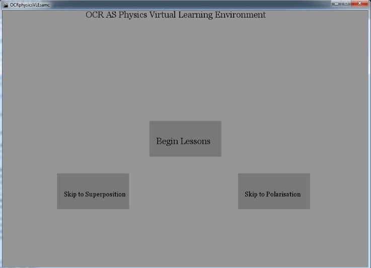
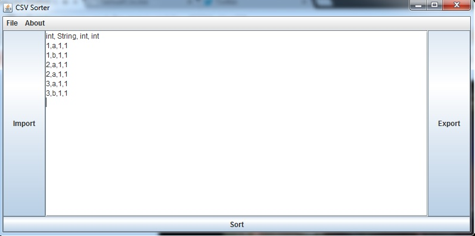
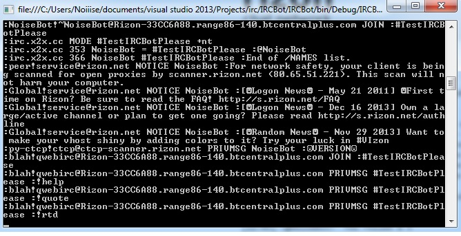

I am a 19 year old originally from Oxford. I'm a geek with a
passion for programming, games, science, films, and music. I am
also a vocal feminist, an atheist and a humanist. I have been
interested in computing all my life, and am intending on
finding a career in software engineering or information
security. I learned my first programming language in my first
year of my Computing A-level, at age 16. It was visual basic,
however the syllabus only dictated we learn to create console
applications, and I never picked the language up further. In my
second year of Computing A-level, I learned the language
Processing to create a project. You can find out more about
that project and download it below. Since then, I have moved on
to Java as my main language of choice, as I have learned it for
my first year of University, and in general enjoy it as a
programming language. I intend on creating as many programs as
my time reasonably allows for over the summer. I would also
like to learn some functional languages, and the C family of
languages soon. Some of these I will learn during my time in my
degree, so I will still mainly be working in Java. Finally, I
really, really like monospace fonts. I have also recently
learned C#, and really enjoy the language.
Below are all of my released coding projects. If a potential employer
wishes to see the source code to check the readability and
maintainability
of my code, I ask you email me at sc630@kent.ac.uk and verify you are a
potential employer, and I will release it to you and you only.
When a new project is released, a timestamp will be posted here to
notify people.
27/11/2014 : Reuploaded the CSV_Sorter project, as the one hosted here
was actually an old version with the wrong about info, and no
documentation.

This was my first proper project I worked on. In the second year of
A-level computing, we had to work on a project of our own, that had to
have a real target end user. This project is designed as a Virtual
Learning Environment (VLE) to help teach AS-level Physics. It also
contains definitions and terms exactly as taught and defined in the OCR
syllabus. It is coded entirely in Processing, which was the easiest
language to code it with at the time, all things considered. If wanted,
I can produce various documentation we had to create along with it.
Some of the simulations use an algorithm created by Daniel Shiffman.

This is my first personal project that I haven't been mandated to work
on for academia. I'm quite proud of it, although it is a simple
program. It is a program coded in java that allows the user to open a
CSV file, sort it, and then export the sorted CSV to a file. It also
allows some basic editing of the CSV, though that wasn't the
functionality I was working on. Also, I found that as I worked on this,
I actually ended up liking the java look and feel rather than windows
look and feel, which was rather odd to me! I would imagine for pretty
much anything other than this program it will be the other way around!

I had been meaning to learn C# for quite a while, so I took the
opportunity to kill 2 birds with 1 stone, and learned C# by making an
IRC bot with it, as this was one of the programs I was also quite keen
on making. This bot is a fairly lightweight CLI bot. If a user sends a
private message "!help" to a channel, it will display all it's
commands. Currently, there is a roll the dice function, a fun Russian
roulette game function, a quote function that messages the channel some
of my favourite quotes, and a kick all function, available to operators
only, of course. It is not yet full release as there is a trivial bug I
am trying to sort, it displays what it reads from the network stream in
the console, but this also overwrites the user's cli commands if they
can't finish it before another message. The only CLI command available
at the moment is quit, which closes the program.
Thanks to L, H, A, V, A, T, A, R,H.